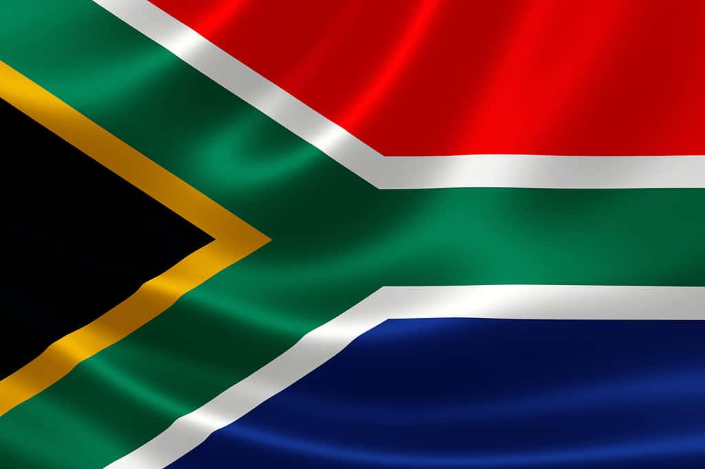

South Africa
South Africa, located at the southern tip of the African continent, is a diverse and culturally rich country known for its stunning landscapes, vibrant cities, and complex history. Here's a brief description covering various aspects of South Africa:
Geography:
South Africa boasts diverse geographical features, including expansive savannas, mountain ranges, coastal areas, and the iconic Table Mountain in Cape Town. The country is bordered by the Atlantic and Indian Oceans, offering a wide range of climates and ecosystems.
Cultural Diversity:
South Africa is renowned for its cultural diversity, with a population comprising various ethnic groups, including Zulu, Xhosa, Ndebele, and others. This diversity is reflected in the country's languages, with 11 official languages, including English, isiZulu, isiXhosa, isiNdebele, and more.
History:
The nation's history is marked by a complex narrative, notably the apartheid era, which officially ended in 1994 with the election of Nelson Mandela as the first black president. The struggle against apartheid has left an indelible mark on the country's identity, fostering a commitment to democracy and human rights.
Wildlife:
South Africa is a haven for wildlife enthusiasts, hosting an abundance of diverse fauna. The famous Kruger National Park is home to the "Big Five" – lions, elephants, buffalos, leopards, and rhinoceroses. Conservation efforts aim to protect these species and their habitats.
Economy:
The country has a mixed economy, with sectors ranging from mining and agriculture to tourism and services. Johannesburg, known as the "City of Gold," is a major financial hub, while Cape Town is celebrated for its tourism industry.
Cuisine:
South African cuisine reflects its multicultural influences. Braai (barbecue) is a popular social activity, and dishes like bobotie (spiced minced meat baked with an egg-based topping) and boerewors (spiced sausage) are local favorites. The Cape Winelands contribute to the country's reputation for excellent wines.
Tourism:
Tourists flock to South Africa for its diverse attractions, including the Garden Route, Robben Island, the Drakensberg Mountains, and the cosmopolitan cities of Cape Town and Johannesburg. The country's rich cultural heritage, combined with its natural beauty, makes it a top destination.
South Africa's resilience, cultural tapestry, and commitment to reconciliation continue to shape its narrative on the global stage.
National Anthem
The Flag
When we think about flags it is quite easy to assume that they are just a brightly colored symbol for a country, state, or group. However, while on the surface that is true, flags actually have much deeper meanings. In many cases they represent the history of the place they symbolize, or even its hopes for the future. With its unusual design and numerous colors, the flag of South Africa actually manages to combine both history and hope.
The South African flag has a rich and symbolic history that reflects the country's journey from apartheid to democracy. The current flag was adopted on April 27, 1994, coinciding with the country's first democratic elections that marked the end of apartheid. Here's a brief history of the South African flag:
Pre-1994:
Before the end of apartheid, South Africa used a flag that was associated with the policies of racial segregation. This flag, known as the "Oranje, Blanje, Blou" (Orange, White, Blue), consisted of horizontal stripes of orange, white, and blue, with the Union Jack in the top-left corner and the Dutch Tricolor on the right.
Post-Apartheid Flag Design:
As South Africa transitioned to a democratic nation, there was a need for a new national symbol that would represent unity and inclusivity. The task of designing the new flag was given to a committee headed by former State Herald, Fred Brownell.
Symbolism:
The design of the South African flag is a powerful representation of the nation's aspirations for unity and reconciliation. The flag is a combination of six colors: black, yellow, green, red, blue, and white. Each color has a specific meaning:
Black: Represents the country's black population.
Yellow, Green, and Red: These colors are inspired by the flag of the African National Congress (ANC), the party that played a crucial role in the anti-apartheid struggle. Yellow represents the abundance of the country's resources, green symbolizes the land, and red represents the people.
Blue and White: Taken from the Dutch Tricolor, these colors represent the contribution of the Dutch and British to South African history.
Y Shape:
One of the most distinctive features of the South African flag is the Y-shaped arrangement of the colors, merging in the center. This formation symbolizes the convergence of diverse elements within South African society, coming together to build a unified and harmonious nation.
Adoption:
The new flag was officially adopted on April 27, 1994, during a ceremony marking the inauguration of Nelson Mandela as the first democratically elected president of South Africa. The flag symbolizes the break from the country's divisive past and the start of a new era of inclusivity, diversity, and democracy.
The South African flag remains a powerful emblem of the country's commitment to building a united nation, celebrating its diversity, and moving forward from a history marked by racial division and discrimination.
Provinces
Gauteng:is one of the nine provinces of South Africa.Situated on the Highveld, Gauteng is the smallest province by land area in South Africa. Although Gauteng accounts for only 1.5% of the country's land area, it is home to more than a quarter of its population (26%). Highly urbanised, the province contains the country's largest city, Johannesburg, which is also one of the largest cities in the world. Gauteng is the wealthiest province in South Africa and is considered the financial hub of not only South Africa but the entire African continent; the financial activity is mostly concentrated in Johannesburg. It also contains the administrative capital, Pretoria, and other large areas such as Midrand, Vanderbijlpark, Ekurhuleni and the affluent Sandton. Gauteng is the most populous province in South Africa with a population of approximately 16.1 million according to mid year 2022 estimates.
Mpumalanga:is a province of South Africa. The name means "East", or literally "The Place Where the Sun Rises" in the Nguni languages. Mpumalanga lies in eastern South Africa, bordering Eswatini and Mozambique. It shares borders with the South African provinces of Limpopo to the north, Gauteng to the west, the Free State to the southwest, and KwaZulu-Natal to the south. The capital is Mbombela. Mpumalanga was formed in 1994, when the area that was the Eastern Transvaal was merged with the former bantustans KaNgwane, KwaNdebele and parts of Lebowa and Gazankulu. Although the contemporary borders of the province were only formed at the end of apartheid, the region and its surroundings have a history that extends back thousands of years. Much of its history, and current significance is as a region of trade
Limpopo:is the northernmost province of South Africa. It is named after the Limpopo River, which forms the province's western and northern borders. The capital and largest city in the province is Polokwane, while the provincial legislature is situated in Lebowakgomo. The province is made up of three former homelands of Lebowa, Gazankulu and Venda and the former parts of the Transvaal province. The Limpopo province was established as one of the new nine provinces after South Africa's first democratic election on 27 April 1994. The province's name was first "Northern Transvaal", later changed to "Northern Province" on 28 June 1995, together with two other provinces. The name was later changed again in 2002 to the Limpopo province. Limpopo is made up of three main ethnic groups: the Pedi, the Tsonga and the Venda. Traditional leaders and chiefs still form a strong backbone of the province's political landscape. Established in terms of the Limpopo House of Traditional Leaders Act, Act 5 of 2005, the Limpopo House of Traditional Leaders' main function is to advise government and the legislature on matters related to custom, tradition and culture including developmental initiatives that affect rural communities. On 18 August 2017, Kgosi Malesela Dikgale was re-elected as the Chairperson of the Limpopo House of Traditional Leaders.
KwaZulu Natal:is a province of South Africa that was created in 1994 when the Zulu bantustan of KwaZulu ("Place of the Zulu" in Zulu) and Natal Province were merged. It is located in the southeast of the country, with a long shoreline on the Indian Ocean and sharing borders with three other provinces and the countries of Mozambique, Eswatini and Lesotho. Its capital is Pietermaritzburg, and its largest city is Durban. It is the second-most populous province in South Africa, with slightly fewer residents than Gauteng. Two areas in KwaZulu-Natal have been declared UNESCO World Heritage Sites: the iSimangaliso Wetland Park and the uKhahlamba Drakensberg Park. These areas are extremely scenic as well as important to the surrounding ecosystems. During the 1830s and early 1840s, the northern part of what is now KwaZulu-Natal was established as the Zulu Kingdom while the southern part was, briefly, the Boer Natalia Republic before becoming the British Colony of Natal in 1843. The Zulu Kingdom remained independent until 1879. KwaZulu-Natal is the birthplace of many notable figures in South Africa's history, such as Albert Luthuli, the first non-white and the first person from outside Europe and the Americas to be awarded the Nobel Peace Prize (1960); Pixley ka Isaka Seme, the founder of the African National Congress (ANC) and South Africa's first black lawyer; John Langalibalele Dube, the ANC's founding president; Harry Gwala, ANC member and anti-apartheid activist; Mac Maharaj, grammy award winning group Ladysmith Black Mambazo, grammy award winning DJ Black Coffee, ANC member, anti-apartheid activist and Little Rivonia Trial defendant; Mangosuthu Buthelezi, the founder of the Inkatha Freedom Party (IFP); Anton Lembede, the founding president of the ANC Youth League; Jacob Zuma, the former President of South Africa; Bhambatha, a 19th-century Zulu chief who became an anti-apartheid icon; and Shaka Zulu.
Free State:.jpeg)
 (13).jpeg)
 (14).jpeg)
 (16).jpeg)
 (17).jpeg)
 (18).jpeg)
formerly known as the Orange Free State, is a province of South Africa. Its capital is Bloemfontein, which is also South Africa's judicial capital. Its historical origins lie in the Boer republic called the Orange Free State and later the Orange Free State Province.
Northern Cape:is the largest and most sparsely populated province of South Africa. It was created in 1994 when the Cape Province was split up. Its capital is Kimberley. It includes the Kalahari Gemsbok National Park, part of the Kgalagadi Transfrontier Park and an international park shared with Botswana. It also includes the Augrabies Falls and the diamond mining regions in Kimberley and Alexander Bay. The Namaqualand region in the west is famous for its Namaqualand daisies. The southern towns of De Aar and Colesberg found within the Great Karoo are major transport nodes between Johannesburg, Cape Town and Gqeberha. Kuruman can be found in the north-east and is known as a mission station. It is also well known for its artesian spring and Eye of Kuruman. The Orange River flows through the province, forming the borders with the Free State in the southeast and with Namibia to the northwest. The river is also used to irrigate the many vineyards in the arid region near Upington. Native speakers of Afrikaans comprise a higher percentage of the population in the Northern Cape than in any other province. The Northern Cape's four official languages are Afrikaans, Tswana, Xhosa, and English. Minorities speak the other official languages of South Africa and a few people speak indigenous languages such as Nama and Khwe. The provincial motto, Sa ǁa ǃaĩsi 'uĩsi ("We go to a better life"), is in the Nǀu language of the Nǁnǂe (ǂKhomani) people. It was given in 1997 by one of the language's last speakers, Ms. Elsie Vaalbooi of Rietfontein, who has since died. It was South Africa's first officially registered motto in a Khoisan language. Subsequently, South Africa's national motto, ǃKe e ǀxarra ǁke, was derived from the extinct ǀXam language.
North west:is a province of South Africa. Its capital is Mahikeng. The province is located to the west of the major population centre of Gauteng and south of Botswana.
Western Cape:is a province of South Africa, situated on the south-western coast of the country. It is the fourth largest of the nine provinces with an area of 129,449 square kilometres (49,981 sq mi), and the third most populous, with an estimated 7 million inhabitants in 2020.[5] About two-thirds of these inhabitants live in the metropolitan area of Cape Town, which is also the provincial capital. The Western Cape was created in 1994 from part of the former Cape Province. The two largest cities are Cape Town and George.
Eastern Cape:


is one of the nine provinces of South Africa. Its capital is Bhisho, but its two largest cities are East London and Gqeberha. The second largest province in the country (at 168,966 km2) after the Northern Cape, it was formed in 1994 out of the Xhosa homelands or bantustans of Transkei and Ciskei, together with the eastern portion of the Cape Province. The central and eastern part of the province is the traditional home of the indigenous Xhosa people. In 1820 this area, which was known as the Xhosa Kingdom, began to be settled by Europeans who originally came from England, and some from Scotland and Ireland. Since South Africa's early years, many Xhosas believed in Africanism, and figures such as Walter Rhubusana believed that the rights of Xhosa people and Africans in general, could not be protected unless Africans mobilised and worked together. As a result, the Eastern Cape is home to many anti-apartheid leaders such as Robert Sobukwe, Oliver Tambo, Nelson Mandela, Walter Sisulu, Winnie Mandela, Govan Mbeki, Alfred Xuma, Cecilia Makiwane, Noni Jabavu, Thabo Mbeki, Chris Hani, Bantu Holomisa, Steve Biko, musicians Miriam Makeba, Madosini, Nathi, Dali Mpofu, Khanyisa Jaceni,Vusi Nova and Zahara, as well as historical figures such as Rev. Tiyo Soga, Samuel Mqhayi, Mongezi Sifika wa Nkomo, Enoch Sontonga and Jotello Festiri Soga.